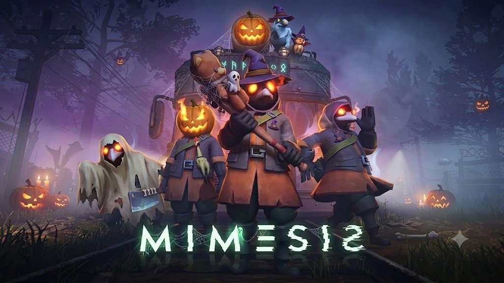

게임 이벤트 기획서 · 트렌드 코리아 2026
MIMESIS 할로윈 시즌 이벤트
크래프톤의 '미메시스'를 대상으로 한 기간 한정 이벤트 기획. AI를 게임에 잘 녹여낸 사례라는 점에서 대상 게임으로 선정했다.
3주이벤트 기간
3종접속 보상 코스튬
4종리스킨 아이템
0개신규 재화
01
세부 운영안
이벤트 기간10월 중순 – 11월 초 (약 3주)
접속 보상할로윈 코스튬 1종 즉시 지급 (호박 / 유령 / 마녀 중 택1)
정비소 상점 개편. 기존 아이템을 할로윈 테마로 리스킨해 기간 한정으로 진열한다. 기존 게임 재화로 구매하며 신규 화폐는 도입하지 않는다.
| 기존 아이템 | 할로윈 리스킨 | 변경 컨셉 |
|---|---|---|
| 나침반 | 저주받은 나침반 | 바늘이 미메시스 방향을 가리키는 듯한 연출 추가 |
| 전기 파리채 | 마녀의 빗자루 | 감전 이펙트를 보라색 마법 이펙트로 변경 |
| 시끄러운 닭 | 유령 까마귀 | 미메시스 접근 시 울음소리를 까마귀 소리로 변경 |
| 디톡스 주스 | 마녀의 물약 | 병 디자인만 변경, 효과는 동일 |
크리에이터 챌린지 연계. "미메시스를 가장 완벽하게 흉내 낸 클립" 공모전. 크래프톤 크리에이터 네트워크(KCN) 챌린지 방식을 그대로 활용한다.
02
기대 효과
- 시즌성 화제 콘텐츠 확보SNS와 커뮤니티 언급량 증가
- 재화 소비 촉진기간 한정 리스킨의 희소성으로 소장 욕구 자극
- 유저 재접속 유도접속 보상으로 이탈 유저 복귀, 신규 유저 진입 장벽 완화
- 게임 본연의 재미 강화코스튬으로 구분이 어려워져 불신과 심리전 요소 심화
03
결론
새 콘텐츠를 만들지 않고 기존 아이템 리스킨과 기존 크리에이터 챌린지 방식을 재활용해 개발 부담을 낮췄다. 동시에 코스튬이 플레이어 구분을 어렵게 만들어, 미메시스의 핵심인 "누가 진짜인가" 하는 의심을 오히려 키운다. 시즌 이벤트가 겉모습만 바꾸는 데 그치지 않고 게임 본연의 재미를 강화하도록 설계한 것이 이 기획의 핵심이다.